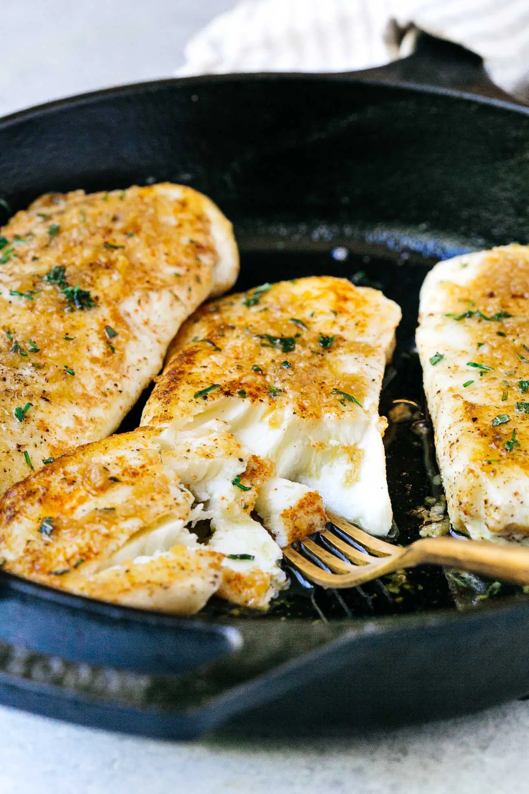

Halibut

Description
A Halibut recipes for the Pescatarians out there
Ingredients
- Olive oil
- Halibut
- Seasoning
- Butter
- Rosemary
- Lemon Juice
- Parsley
Directions
- In a large skillet heat olive oil over medium-high heat.
- Pat halibut dry with a paper towel and season on both sides of the fish with garlic powder, onion powder, paprika, and salt and pepper
- Place the halibut fillets in a large cast-iron skillet and turn the heat to medium heat
- Sear for 3-4 minutes
- Flip your halibut fillets over to cook the other side
- Set aside once the halibut is cooked
- Reduce the heat to low and add butter to the skillet
- When butter melts, add garlic. Cook for 30 seconds or 1 minute. Keep a close eye on teh garlic as you don't want it to burn
- Add the halibut back to the pan and spoon the sauce over the fillets. You might have to tilt the pan a bit. Garnish with fresh rosemary or fresh parsley. You can also garnish it with lemon zest.